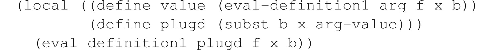

21.3 Interpreting Functions
At this point, you understand how to evaluate BSL programs that consist of constant definitions and variable expressions. Naturally you want to add function definitions so that you know—at least in principle—how to deal with all of BSL.
The goal of this section is to refine the evaluator of chapter 21.2 so that it can cope with functions. Since function definitions show up in the definitions area, another way to describe the refined evaluator is to say that it simulates DrRacket when the definitions area contains a number of function definitions and a programmer enters an expression in the interactions area that contains uses of these functions.
For simplicity, let’s assume that all functions in the definitions area consume one argument and that there is only one such definition. The necessary domain knowledge dates back to school where you learned that f (x) = e represents the definition of function f, that f (a) represents the application of f to a, and that to evaluate the latter, you substitute a for x in e. As it turns out, the evaluation of function applications in a language such as BSL works mostly like that, too.
Before tackling the following exercises, you may wish to refresh your knowledge of the terminology concerning functions as presented in intermezzo 1. Most of the time, algebra courses gloss over this aspect of mathematics, but a precise use and understanding of terminology is needed when you wish to solve these problems.
Exercise 356. Extend the data representation of chapter 21.2 to include the application of a programmer-defined function. Recall that a function application consists of two pieces: a name and an expression. The former is the name of the function that is applied; the latter is the argument.
Represent these expressions: (k (+ 1 1)), (* 5 (k (+ 1 1))), (* (i 5) (k (+ 1 1))). We refer to this newly defined class of data as BSL-fun-expr. 
Exercise 357. Design eval-definition1. The function consumes four arguments:
1. a BSL-fun-expr ex;
2. a symbol f, which represents a function name;
3. a symbol x, which represents the functions’s parameter; and
4. a BSL-fun-expr b, which represents the function’s body.
It determines the value of ex. When eval-definition1 encounters an application of f to some argument, it
1. evaluates the argument,
2. substitutes the value of the argument for x in b; and
3. finally evaluates the resulting expression with eval-definition1.
Here is how to express the steps as code, assuming arg is the argument of the function application:

Notice that this line uses a form of recursion that has not been covered. The proper design of such functions is discussed in part V.
If eval-definition1 encounters a variable, it signals the same error as eval-variable from exercise 354. It also signals an error for function applications that refer to a function name other than f.
Warning The use of this uncovered form of recursion introduces a new element into your computations: non-termination. That is, a program may run forever instead of delivering a result or signaling an error. If you followed the design recipes of the first four parts, you cannot write down such programs. For fun, construct an input for eval-definition1 that causes it to run forever. Use STOP to terminate the program.
For an evaluator that mimics the interactions area, we need a representation of the definitions area. We assume that it is a list of definitions.
Exercise 358. Provide a structure type and a data definition for function definitions. Recall that such a definition has three essential attributes:
1. the function’s name, which is represented with a symbol;
2. the function’s parameter, which is also a name; and
3. the function’s body, which is a variable expression.
We use BSL-fun-def to refer to this class of data.
Use your data definition to represent these BSL function definitions:
1. (define (f x) (+ 3 x))
2. (define (g y) (f (* 2 y)))
3. (define (h v) (+ (f v) (g v)))
Next, define the class BSL-fun-def* to represent a definitions area that consists of a number of one-argument function definitions. Translate the definitions area that defines f, g, and h into your data representation and name it da-fgh.
Finally, work on the following wish:
; BSL-fun-def* Symbol -> BSL-fun-def
; retrieves the definition of f in da
; signals an error if there is none
(check-expect (lookup-def da-fgh 'g) g)
(define (lookup-def da f) …)
Looking up a definition is needed for the evaluation of applications.
Exercise 359. Design eval-function*. The function consumes ex, a BSL-fun-expr, and da, a BSL-fun-def* representation of a definitions area. It produces the result that DrRacket shows if you evaluate ex in the interactions area, assuming the definitions area contains da.
The function works like eval-definition1 from exercise 357. For an application of some function f, it
1. evaluates the argument;
2. looks up the definition of f in the BSL-fun-def representation of da, which comes with a parameter and a body;
3. substitutes the value of the argument for the function parameter in the function’s body; and
4. evaluates the new expression via recursion.
Like DrRacket, eval-function* signals an error when it encounters a variable or function name without definition in the definitions area.